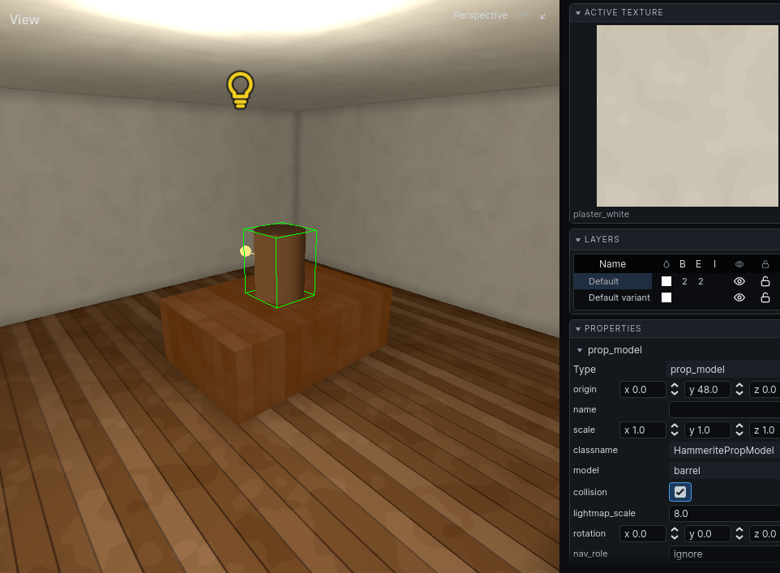

Entities
An entity is anything in the map that is not the carve itself: a light, a prop, a decal, a door, a sound. Each has a type and a set of properties shown in the inspector.
There are two kinds.
| Kind | What it is | Examples |
|---|---|---|
| Point entity | Something placed at a point | Lights, props, decals, sounds |
| Brush entity | Something made of brushes you drew | Doors, lifts, trigger volumes, secret doors |
How to place and edit them: Entities in the Editor section.
Types that come with Hammerite
| Type | Kind | What it is |
|---|---|---|
prop_model |
point | A model: furniture, clutter, anything not built from brushes |
decal |
point | A picture laid on a surface: a scorch mark, a poster, a rug |
light_point |
point | A lamp whose light is baked for good |
light_point_dynamic |
point | A lamp whose baked light the game can dim or switch |
light_point_movable |
point | A lamp that is not baked: a real-time light with a shadow, that can move |
light_spot |
point | A lamp shining in a cone, baked for good |
light_spot_dynamic |
point | A cone of baked light the game can dim or switch |
light_spot_movable |
point | A real-time light shining in a cone, with a shadow, that can move |
light_directional |
point | Sun or moon |
light_directional_dynamic |
point | A directional light the game can dim or switch, such as lightning |
group |
brush | Brushwork grouped as one thing. Does nothing on its own. |
trigger |
brush | A volume that triggers another entity when something walks into it |
The audio and navigation sections add their own: env_sound and env_sound_environment (Rooms, Outdoors), and nav_link (Links).
Your game adds the rest: doors, guards, pickups. What they do is your game's; see its documentation.
Props
A prop_model shows a model found where your game keeps its models.
| Property | Default | What it does |
|---|---|---|
model |
empty | Which model, by name |
collision |
on | Whether things stop against it and agents route around it |
lightmap_scale |
8 | World units per lightmap texel for its baked light. Bigger is cheaper and blurrier. |
rotation |
0, 0, 0 | How it is turned, in degrees about X, Y and Z |
scale |
1, 1, 1 | How far it is stretched along each of its own axes, before it is turned |
A prop can put another texture on one of its model's materials: a property called texture/ and the
material's name - lower-case, without an extension, so texture/replace0 for a material REPLACE0.GIF -
holding a texture's name. A model made to be dressed differently wherever it stands, such as a door or
a banner, is one model with as many looks as there are props.
The scale tool sizes a prop as it sizes brushes: each of the prop's own axes grows by as much as the drag stretches it, so a prop that is turned keeps its corners square. Bake again after sizing one.
A prop is lit by the bake like a wall. See Baking.

Decals
A decal is a picture laid onto the surface under it, cut to that surface's shape. It is lit by that surface's baked light, so a decal in a dark corner is dark.
| Property | Default | What it does |
|---|---|---|
decal |
empty | Which picture, by name, from your game's decals |
size |
64 x 64 | How big it is on the surface, in world units |
angle |
0 | How far it is turned on the surface, in radians |
normal |
up | Which way the surface it was put on faced |
affects_lighting |
off | Whether the bake reads it. See Lighting. |
Decals come from their own library, separate from surface textures. See Decals.
Lights
Every light type has energy, color and light_group. Point lights add radius; directional lights add direction and follow_sky. What they mean, and how static and dynamic lights differ, is in Lighting.
Triggers
A trigger is brushwork that triggers another entity when something walks into it: a lamp that comes on as the player enters a room, a door that opens. Draw its brushes, press Ctrl T, and pick trigger as its Type in the inspector. Its brushwork shows only in the editor, and light passes through it.
| Property | Default | What it does |
|---|---|---|
target |
empty | The name of the entity it triggers, chosen from the names in the map. Every entity of that name is triggered. |
target_impulse |
nothing | What it hands the entity it triggers. Pick a type, then a value. What it means is up to that entity: a dynamic or movable light reads a bool as on or off and anything else as switch over; a sound reads a bool as play or stop. |
activator_group |
empty | Only a body in this node group sets it off, such as your game's player. Empty for anything. |
once |
off | Whether it fires only the first time, until the simulation is reset |
It notices nothing while the editor holds the world still. Run it (see Entities) to try it, or select it and press Space to fire it by hand.
Brush entities
A brush entity is made from brushes you select. Its brushwork belongs to it and moves with it.
- Entity brushwork is always detail. Making structural brushes into an entity turns them into detail.
- It carves nothing and fills nothing. A door does not close its doorway in the carve; the opening stays, and the door stands in it. See Doors and openings.
- Its faces are never hidden against a neighbour, and hide none: a door flush with its frame is flush only until it opens.
Two brush properties in the inspector's Lighting section matter most for brush entities:
| Property | Default | Turn it... |
|---|---|---|
| Casts shadow | on | Off for brushwork that is a marker rather than matter: a trigger volume, a region an entity claims. Light passes through it. |
| Bake into the world | off | On for brushwork that is scenery until something moves it, such as a secret door flush with its wall. See Lighting. |
A game's entity type can turn either on or off for all of its brushwork at once, as a trigger turns Casts shadow off.
Entities and variants
An entity exists only in the variants its layer belongs to. See Variants.